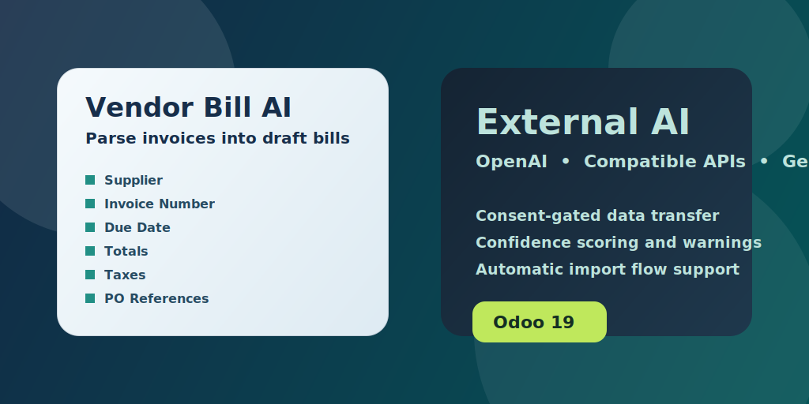

This module adds an AI-assisted vendor bill import workflow for Odoo Accounting. It reads the main attachment on a draft vendor bill, sends the document to the configured external AI provider, and writes back the extracted supplier, reference, dates, totals, taxes, purchase order references, and invoice lines.

This module sends the vendor bill attachment and the extracted accounting context needed for parsing to the configured external AI provider. Parsing is blocked until an administrator explicitly enables the in-app consent setting.
If your company has internal data residency, privacy, or supplier confidentiality requirements, review them before enabling this module in production.